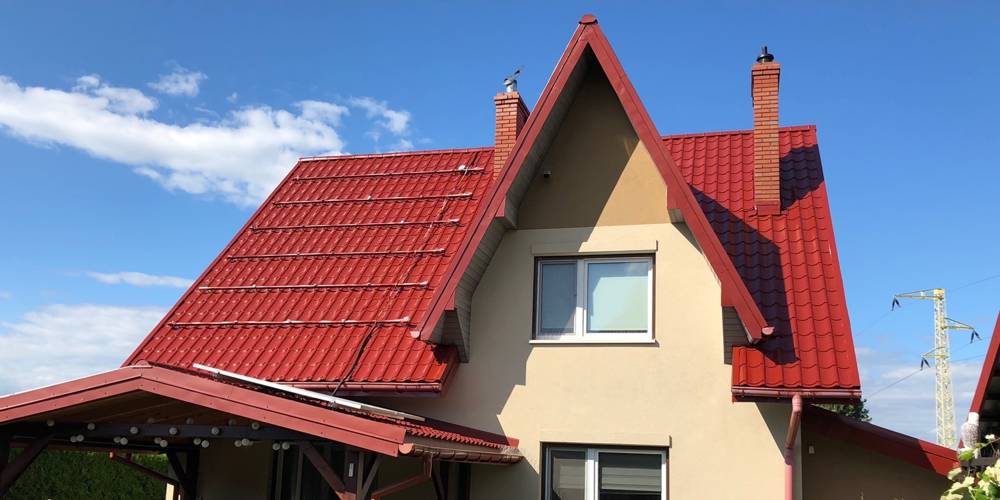

Strona głównaRealizacje
Nasze prace,z bliska.
Zdjęcia z naszych zleceń: dachy w trakcie mycia i po malowaniu, elewacje, hale i kostka brukowa.
Galeria
Prostoz naszych zleceń.
Kliknij zdjęcie, żeby je powiększyć. Zajrzyj też na nasz profil na Facebooku.
Skyline na Facebooku
Dach po malowaniu
Blachodachówka w nowym kolorze
Dachówka w trakcie mycia
Czysty pas obok starego nalotu
Dom po malowaniu dachu
Pokrycie w kolorze grafitowym
Kostka przed i po myciu
Ten sam chodnik, dwa zdjęcia
Mycie dachu
Połowa połaci już czysta
Praca na elewacji
Budynek piętrowy, z drabiny
Dach hali w trakcie malowania
Natrysk na dużej powierzchni
Granica mycia na dachu
Dachówka przed i po
Elewacja drewnianego domu
Deski pomalowane na szaro
Malowanie natryskowe w hali
Ściany i posadzka osłonięte folią
Praca na dachu
Mycie blachodachówki pod ciśnieniem
Elewacja garażu w trakcie prac
Brama i podjazd osłonięte
Mycie dachu z podnośnika
Dom drewniany, widać granicę myciaKontakt
Planujeszpodobną pracę?
Opowiedz, co trzeba zrobić. Przyjedziemy, obejrzymy i przygotujemy wycenę.